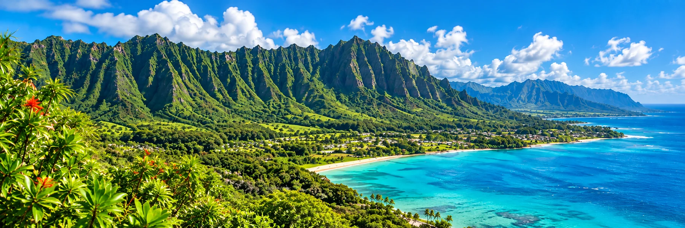

歐胡島，想玩的都排進去。
行程暫時無法載入，請重新整理或稍後再試。
每日行程
選一天，看看當天去哪裡。
想去的地方
沒有符合的地點，試試其他關鍵字。
行前分工
Leo 與 Tyson，一起把準備做完。
進度由 Leo 更新；活動加入行程不代表已完成預約，集合資訊以實際確認單為準。

行程暫時無法載入，請重新整理或稍後再試。
選一天，看看當天去哪裡。
沒有符合的地點，試試其他關鍵字。
Leo 與 Tyson，一起把準備做完。
進度由 Leo 更新；活動加入行程不代表已完成預約，集合資訊以實際確認單為準。